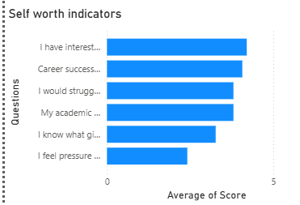
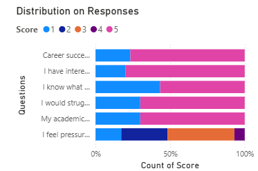
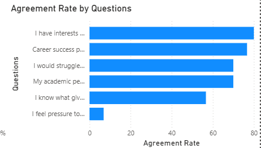

More Than a Number
Understanding Identity and Self-Worth Among Students

Hook
Ask a student to describe themselves.
The answer often begins with achievements.
A CGPA.
An internship.
A placement offer.
A certification.
An accomplishment.
Somewhere along the way, success stops being something students achieve and starts becoming something students become.
The distinction is subtle.
But it matters.
Because when identity becomes tied to achievement, every success feels personal—and every setback does too.
The question is no longer what students have achieved.
The question is how much of themselves they see in those achievements.
Research Question
How closely are students' identities and sense of self-worth connected to academic performance, career success, and personal achievement?
Methodology
To explore this question, a survey was conducted among 30 students using six identity and self-worth indicators.
Students responded to statements on a five-point Likert scale ranging from Strongly Disagree (1) to Strongly Agree (5).
The survey examined themes such as achievement-based self-worth, academic identity, career success, personal meaning, interests beyond academics, and pressure to prove oneself through accomplishments.
Responses were analyzed and visualized using Power BI dashboards to identify patterns in how students define themselves and evaluate their personal value.
Finding 1: Achievement Plays a Significant Role in Self-Worth

Figure 1. Self-Worth Indicators
One of the strongest findings emerging from the survey was the close relationship between achievement and self-evaluation.
Many students reported that career success and accomplishments play an important role in how they view themselves.
This is not entirely surprising.
Students spend years in environments where performance is constantly measured.
Marks, rankings, internships, placements, and achievements often become the most visible indicators of progress.
Over time, these indicators can begin to feel like reflections of personal value.
Success becomes more than an outcome.
It becomes evidence.
Evidence that one's effort mattered.
Evidence that one is capable.
Evidence that one belongs.
The data suggests that for many students, achievement is not merely something they pursue.
It is something they use to understand themselves.
Finding 2: Identity Extends Beyond Academics—But Not Completely

Figure 2. Agreement Rate by Questions
The survey also revealed an encouraging pattern.
A large number of students reported having interests, passions, and sources of meaning beyond academics and career goals.
This suggests that students do not define themselves entirely through grades or placements.
Many recognize that identity is larger than professional success.
However, the findings reveal a tension.
Students may understand intellectually that their worth extends beyond achievement, yet still feel emotionally affected when achievements are absent.
Knowing something and believing it are not always the same thing.
A student may believe that life consists of more than placements and performance.
Yet a rejection, poor result, or missed opportunity can still feel deeply personal.
The challenge is not recognizing that identity is multifaceted.
The challenge is remembering it during moments of disappointment.
Finding 3: The Pressure to Prove Worth Remains Strong

Figure 3. Distribution of Identity Responses
One of the most revealing findings was the pressure students reported feeling to prove their worth through accomplishments.
Many respondents agreed that achievement influences how they evaluate themselves and how they believe others perceive them.
This pressure often develops quietly.
Students rarely wake up and decide to tie their identity to achievement.
Instead, the connection forms gradually.
Praise follows success.
Recognition follows results.
Validation follows accomplishments.
Over time, achievements become more than milestones.
They become evidence of worth.
The danger is not ambition itself.
The danger is believing that self-worth rises and falls with every outcome.
When that happens, success can feel like confirmation.
And failure can feel like contradiction.
Student Voices
Although their experiences differ, a common theme emerges: students are not simply chasing success.
They are searching for reassurance.
Reassurance that their efforts matter.
Reassurance that setbacks do not define them.
Reassurance that who they are is larger than any single outcome.
Analysis and Interpretation
The story emerging from the data is not about achievement.
It is about identity.
Students naturally seek evidence that they are progressing, growing, and moving toward meaningful goals.
Academic and career achievements provide visible proof of that progress.
The problem arises when achievements become the only evidence students trust.
When success becomes the primary source of validation, setbacks gain extraordinary power.
A rejection is no longer a rejection.
It becomes a statement about the self.
A missed opportunity becomes more than an outcome.
It becomes a question.
“Am I enough?”
The findings suggest that many students are navigating this tension every day.
They understand that identity should extend beyond performance.
Yet they continue living in environments where performance receives the most recognition.
The result is a constant negotiation between who they are and what they achieve.
Conclusion
The findings suggest that identity and self-worth are closely connected to achievement for many students.
Students reported strong links between career success, academic performance, and personal evaluation.
At the same time, many acknowledged having interests, passions, and sources of meaning beyond academic accomplishments.
The most important finding is not that students value success.
It is that success often becomes a way of measuring themselves.
For today's students, the challenge is not abandoning ambition.
It is learning to pursue achievement without allowing achievement to become the sole foundation of identity.
Because a placement, a grade, or an accomplishment may describe what a student has achieved. It should never be the only thing that describes who they are.